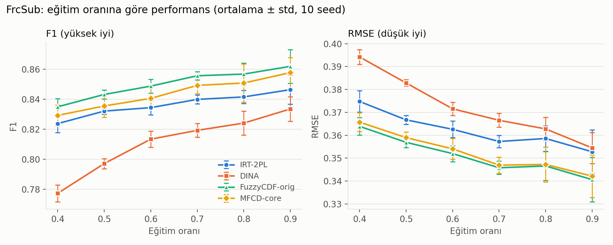
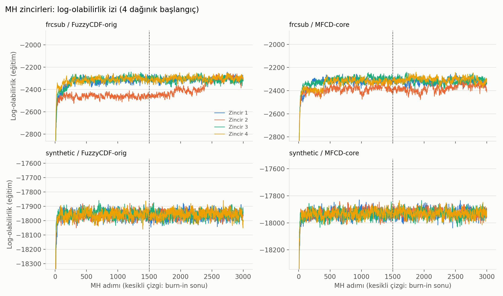
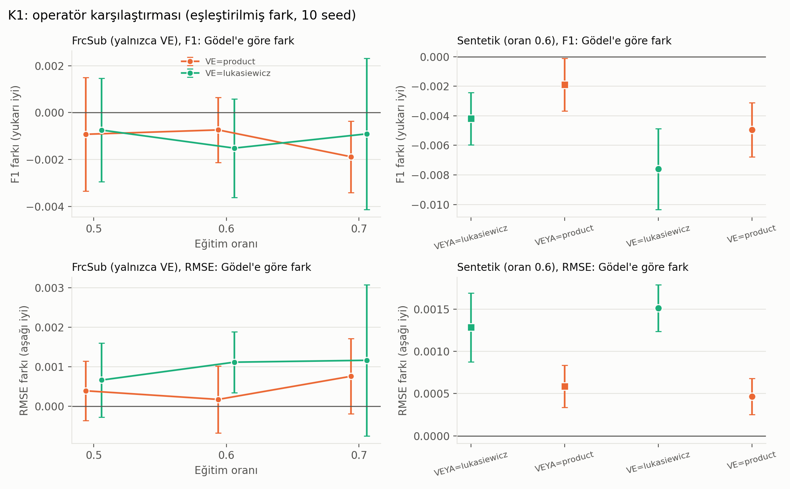
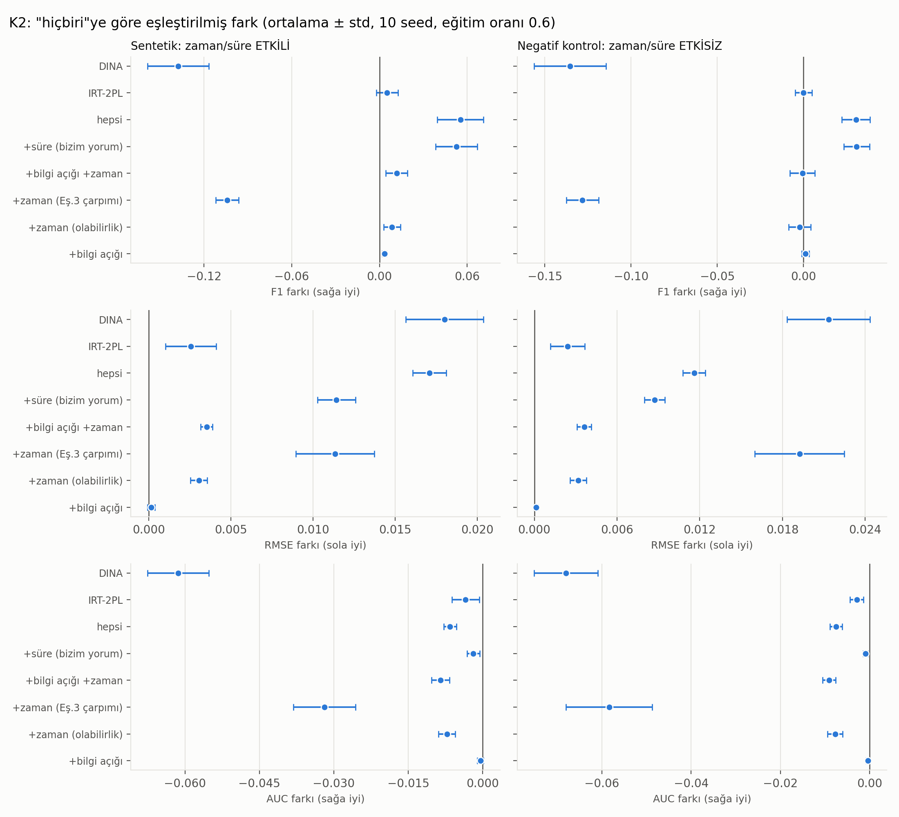
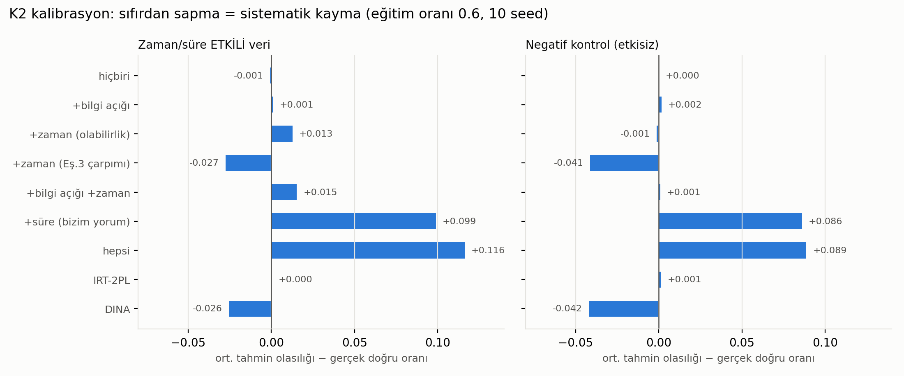

Musa Semih Büyüközkan (1306230099)
Bulanık Mantık Dersi, Dönem Projesi, 2026-2027 Güz
github.com/semihbuyukozkan/fuzzy-cognitive-diagnosis
Eğitimde bir öğrencinin henüz çözmediği bir soruyu doğru yapıp yapmayacağını önceden tahmin edebilmek, öğrenciye uygun alıştırma önermek için gereklidir. Öğrencinin hangi konuyu ne kadar bildiği doğrudan görülemez; elimizde yalnızca geçmiş cevaplar vardır ve bunlar da şans ya da dikkatsizlik yüzünden gürültülüdür. Bilişsel tanı modelleri bu sorunu, her soruyu bir dizi beceriyle ilişkilendirip öğrencinin becerilerini cevaplardan kestirerek çözer.
DINA gibi klasik modeller bir beceriyi ikili ele alır: öğrenci beceriye ya sahiptir ya da değildir. Gerçekte ise öğrenci bir konuyu kısmen bilebilir. Bulanık kümeler bu durumu doğal biçimde ifade eder, çünkü bir elemanın kümeye aitliği 0 ile 1 arasında bir derece olabilir [9]. Bu fikir bilişsel tanıya FuzzyCDF ile uygulanmıştır [2], [3].
Referans aldığımız makale [1], FuzzyCDF'ye üç ekleme yapar: cevabın verildiği zamana göre ağırlık, cevap süresine göre ağırlık ve bilgi açığı. Ayrıca bunu dikkat mekanizmalı bir derin ağla birleştirir. Bu projede makalenin bulanık kısmı sıfırdan yazıldı, derin ağ kısmı yapılmadı. Kod tamamen bu projede yazılmıştır, makale yazarlarının kodu kullanılmamıştır.
Çalışmanın amacı iki soruya cevap aramaktır. Birincisi, yazdığımız model makaledeki eğilimleri (modellerin birbirine göre sıralaması gibi) yeniden üretebiliyor mu? İkincisi, makalenin eklediği bulanık faktörler kontrollü bir ortamda gerçekten fayda sağlıyor mu? Raporda sırasıyla ilgili çalışmalar, teorik arka plan, makalenin yöntemi, bizim gerçekleştirmemiz, deneyler, sonuçlar ve sınırlılıklar anlatılmaktadır. Rapordaki bütün sayılar depodaki betiklerin ürettiği tablolardan alınmıştır.
Bilişsel tanı modelleri, öğrencilerin cevaplarını soru-beceri (Q) matrisi üzerinden gizli becerilere bağlar. DINA [4] bu alanın en bilinen modellerindendir. Soruyu çözmek için gerekli tüm becerilere sahip olmak gerekir, slip (bilip yanlış yapma) ve guess (bilmeden doğru tahmin etme) parametreleri ise gürültüyü karşılar. FuzzyCDF [2], [3] becerileri ikili değil bulanık ele alır ve hem doğru-yanlış olarak puanlanan sorularda hem de kısmi puan verilen sorularda (yazma, çeviri gibi) kullanılabilir.
Derin öğrenmeye dayanan yaklaşımlar iki yönde gelişmiştir. DKT [5] ve DKVMN [6] gibi bilgi izleme modelleri öğrencinin zaman içindeki gelişimini yakalamaya çalışır. NeuralCDM [7] ise beceri ile soru arasındaki ilişkiyi sinir ağıyla öğrenir ve Q matrisini de kullanır. Bilişsel tanıdaki yeni gelişmeleri toplayan bir derleme [8] (henüz hakem değerlendirmesinden geçmemiş bir ön baskı) bu çalışmaların bir kısmını özetlemektedir. Genel olarak bulanık modeller yorumlanabilirliği, derin modeller ise tahmin gücünü öne çıkarır. Makale [1] ikisini birleştirmeye çalışmaktadır. Bizim çalışmamız yeni bir model önermiyor; makaledeki bulanık eklemelerin etkisini ayrı ayrı ölçmeyi amaçlıyor.
Klasik bir kümede eleman ya kümenin içindedir ya da dışındadır. Bulanık kümede ise elemanın aitlik derecesi 0 ile 1 arasında bir sayıdır [9]. Burada "beceri k'yı bilenler" bir bulanık kümedir ve öğrencinin bu kümeye aitlik derecesi, onun o beceriyi ne kadar bildiğini gösterir. Bu dereceyi yetenek değerinden üreten fonksiyona üyelik fonksiyonu, bu adıma da fuzzification denir. Çalışmada üyelik fonksiyonu olarak sigmoid kullanılmıştır:
Burada θi öğrencinin yetenek düzeyi, βk becerinin zorluğu, αk ise yetenekteki küçük farkların dereceye ne kadar yansıdığını belirleyen eğim parametresidir. Yetenek zorluğa eşit olduğunda derece 0.5 olur. Dilsel değişkenler (düşük, orta, yüksek gibi) kullanılmamış, derece doğrudan sayı olarak tutulmuştur.
Bir soru birden çok beceri istiyorsa dereceler birleştirilmelidir. Bulanık VE işlemi bir t-norm ile, bulanık VEYA işlemi bir t-conorm ile yapılır. Üç aile karşılaştırılmıştır. Gödel ailesi VE için en küçük değeri, VEYA için en büyük değeri alır. Çarpım ailesi VE için a·b, VEYA için a+b−ab hesaplar. Łukasiewicz ailesi VE için max(0, a+b−1), VEYA için min(1, a+b) kullanır. Doğru-yanlış olarak puanlanan (objektif) sorularda gerekli tüm becerilere sahip olmak gerektiği için VE, yazma ve çeviri gibi (subjektif) sorularda bir beceri diğerinin eksiğini kısmen kapatabileceği için VEYA kullanılır.
Makale ayrıca bilgi açığı kavramını ekler. Her soru-beceri çifti için 0 ile 1 arasında bir önem değeri μ tanımlanır. Objektif soruda bir becerinin katkısı ã = 1 − μ(1 − a) olarak hesaplanır, yani önemli bir becerideki eksiklik daha çok cezalandırılır. Gödel VE ile birleştirildiğinde bu, makalenin 8 ve 9 numaralı denklemlerine karşılık gelir. μ değerleri yalnızca 0 ve 1 ise ifade en küçük dereceye eşit olur; bunu rastgele girdilerle sayısal olarak da doğruladık.
Soru başarı derecesi η bulunduktan sonra slip (s) ve guess (g) parametreleri eklenir: P(doğru) = (1−s)·η + g·(1−η). Bu olasılık her zaman g ile 1−s arasında kaldığı için logaritma hesaplarında sorun çıkmaz. Sonuç olarak elde edilen olasılık 0.5 eşiğiyle doğru ya da yanlış kararına çevrilir. Bu eşikleme, klasik bulanık sistemlerdeki durulaştırma adımının bu problemdeki karşılığı olarak düşünülebilir. Sistem Mamdani ya da Sugeno türünde bir kural tabanı değildir; kurallar Q matrisinden gelen sabit VE / VEYA yapısından ibarettir. Type-2 bulanık mantık, ANFIS ve Fuzzy C-Means kullanılmamıştır.
Makale iki bölümden oluşur. İlk bölüm olan MFCD, yukarıdaki üyelik hesabına üç eklemeyi getirir. Zaman ağırlığı ω = (Tm − Δt) / Tm ile hesaplanır ve eski kayıtların daha az güvenilir olduğunu söyler. Cevap süresi ağırlığı, hızlı verilen doğru cevapların daha güvenilir sayılmasını sağlar. Bilgi açığı ise önceki bölümde anlatıldığı gibidir. Model parametreleri Metropolis-Hastings yöntemiyle kestirilir. İkinci bölüm olan MAKT, BiGRU ve çok başlı dikkat mekanizmasıyla öğrencinin zaman içindeki bilgi durumunu izleyen derin bir ağdır.
Makalede kullanılan veri kapalıdır: 1000 öğrenci, 50 soru (38 okuma, 6 yazma, 6 çeviri) ve 25 bilgi noktası. Karşılaştırılan modeller DINA, FuzzyCDF, My-FuzzyCDF (zaman ve süre eklenmiş FuzzyCDF), DKT ve C&RM-MAKT'tır. Ölçütler PRE, Recall, F1, MAE ve RMSE'dir. Makalenin sonuç tablosunda önerilen model her ölçütte en iyi görünür; örneğin objektif sorularda %60 eğitim oranında F1 değeri 0.726'dır.
Makaleyi okurken bazı noktaların bu çalışma için sorun yarattığını gördük. Veri kapalı olduğu için sonuçlar bağımsız olarak kontrol edilemiyor. Zaman ağırlığı denklem 3'te yeterlilik derecesiyle çarpılıyor gibi yazılmış, ancak bunun bir olabilirlik ağırlığı olup olmadığı belli değil. Süre ağırlığının hangi aşamada kullanıldığı da açık yazılmamış. Ayrıca derin ağın katkısı ile bulanık eklemelerin katkısı birbirinden ayrılmamış. Sonuç tablosunda metin ile tablo arasında küçük tutarsızlıklar da var; örneğin metinde "her koşulda en iyi" denmesine rağmen öznel sorularda %50 eğitim oranında Recall değeri C&RM-MAKT'ta daha yüksek, ve tablodaki F1 değerleri PRE ve Recall'dan hesaplananla tam uyuşmuyor. Bu yüzden makale sayılarıyla yalnızca eğilim düzeyinde karşılaştırma yapılmıştır. Makaleden aktardığımız sayılar depodaki docs/paper_reference_results.md dosyasındadır.
Gerçekleştirilen sistem Şekil 1'de özetlenmiştir. Yetenek ve beceri parametrelerinden üyelik dereceleri hesaplanır, bunlar soru-beceri önemiyle birleştirilip bulanık VE ya da VEYA ile soru başarı derecesine dönüştürülür, son olarak slip ve guess ile olasılığa çevrilir. Kod Python ile yazılmıştır; üyelik fonksiyonu, bulanık operatörler ve model hesabı ayrı dosyalardadır.
Parametreler Metropolis-Hastings yöntemiyle kestirilmiştir [10]. Yöntem her adımda parametrelere küçük rastgele değişiklikler önerir ve verinin olabilirliğine göre bu değişikliği kabul ya da reddeder. Önsel dağılımlar bu çalışmada seçilmiştir: yetenek ve zorluk için standart normal, ayırt edicilik için log-normal, slip ve guess için 0 ile 0.4 arasında düzgün dağılım, μ için 0 ile 1 arasında düzgün dağılım. Her zincir 1500 adımdır, ilk 700 adım atılır ve kalan adımların ortalaması tahmin olarak alınır. Adım büyüklükleri kabul oranı yaklaşık 0.25 ile 0.55 arasında kalacak şekilde elle ayarlanmıştır.
Zaman ve süre ağırlıkları, her cevabın olabilirliğe katkısını çarpan birer ağırlık olarak uygulanmıştır: w = ωzaman(1 + λ·ωC). Burada ωC, cevap süresinin soru için en uzun süreye oranından türetilen ve yalnızca doğru cevaplarda sıfırdan farklı olan bir değerdir; λ = 1 alınmıştır. Bu normalizasyon ve λ değeri bize aittir, makalede yazmamaktadır. Makaledeki denklem 3'ün yazımına en yakın okuma olan, yeterliliği VE / VEYA'dan önce ω ile çarpma yöntemi de ayrı bir ayar olarak denenmiştir. Makale uygulamayı net anlatmadığı için bunlar makalenin gerçek yönteminin kanıtı değil, bizim iki yorumumuzdur.
Karşılaştırma için üç model yazılmıştır. IRT-2PL modeli en büyük sonsal olasılık (MAP) kestirimiyle eğitilmiş ve gradyanı sayısal olarak doğrulanmıştır. DINA modeli, 25 beceri için EM pratik olmadığından Gibbs örnekleyiciyle gerçekleştirilmiştir. FuzzyCDF-orig, μ değerlerinin Q matrisine eşitlendiği ve ağırlıkların kullanılmadığı bulanık modeldir. Bizim modelimiz olan MFCD-core ise buna ek olarak dereceli μ değerlerini de öğrenir. Kodun doğruluğunu kontrol etmek için 69 birim testi yazılmıştır; bunlar elle hesaplanmış t-norm değerlerini, bilgi açığı ile en küçük değer eşdeğerliğini, Łukasiewicz'in uç değerlerini, metrikleri ve veri boyutlarını kontrol eder.
Makale üç bulanık eklemeyi ve derin bir ağı aynı anda önerir ve her birinin katkısını ayrı ayrı göstermez. Biz bu yüzden iki deney tasarladık.
Birinci deneyde bulanık operatör ailelerinin (Gödel, çarpım, Łukasiewicz) etkisi ölçüldü. Model her seferinde aynı veri bölmesi, aynı rastgele sayı tohumu ve aynı ayarlarla sıfırdan eğitildi; yalnızca operatör değişti. Gerçek veride yalnızca VE operatörü karşılaştırılabildi, çünkü FrcSub'da öznel soru yoktur. Sentetik veride hem VE hem VEYA karşılaştırıldı. Sentetik veriyi Gödel ile ürettiğimiz için Gödel'in kazanması doğal olurdu. Bu yüzden deney, veri çarpım operatörüyle üretilerek de tekrarlandı.
İkinci deneyde makalenin faktörleri (bilgi açığı, zaman, süre) sentetik veride tek tek ve birlikte açıldı. Faktörlerin yararı olup olmadığını anlamak için ek olarak bir kontrol verisi de üretildi. Bu veride zaman ve süre değerleri cevaplardan bağımsızdır, yani bu iki bilgi aslında hiçbir şey söylemez. Bir yöntem bu veride de iyileşme gösteriyorsa, iyileşme faktörün taşıdığı bilgiden değil yöntemin başka bir yan etkisinden geliyor demektir.
Ölçütler olarak PRE, Recall, F1 (doğru cevap pozitif sınıf, eşik 0.5), MAE ve RMSE kullanıldı. İkinci deneyin ilk sonuçlarında süre faktöründe F1 değerinin beklenenden fazla arttığını görünce bu sonuca şüpheyle yaklaştık ve eşikten bağımsız bir ölçüt olan AUC ile kalibrasyon ölçüsünü (ortalama tahmin ile gerçek doğru oranı arasındaki fark) ekledik. İlk koşu ile bu ölçütler eklendikten sonraki tekrar koşu, F1 ve RMSE açısından birebir aynı sonuç verdi.
Gerçek veri olarak FrcSub kullanıldı [2]. Bu veri, kesir çıkarma testinden 536 öğrenci ve 20 sorudan oluşur, 8 beceri içerir, cevaplar ikilidir ve yalnızca objektif sorular vardır. Zaman ve süre bilgisi yoktur. Veri herkese açık bir adresten indirilir; indirme betiği dosyanın SHA-256 değerini ve boyutlarını kontrol eder, ham veri depoya konmaz.
Sentetik veri açıkça yapaydır ve makalenin yapısını taklit eder: 1000 öğrenci, 50 soru (38 okuma, 6 yazma, 6 çeviri), 25 beceri, 0.5 ile 1 arasında dereceli μ değerleri. Cevaplar, kayıt zamanına göre değişen bir yetenek kaymasıyla ve süreyle ilişkili olacak şekilde üretilmiştir. Veri bu faktörlerle üretildiği için bu faktörleri modelleyen yöntemler avantajlıdır. Dolayısıyla sentetik sonuçlar faktörlerin geri kazanılıp kazanılamadığını gösterir, gerçek hayatta işe yarayıp yaramadığını göstermez.
Her öğrencinin cevaplarının %40 ile %90'ı eğitim, kalanı test için ayrıldı; deneyler 0'dan 9'a kadar 10 farklı tohumla tekrarlandı ve her tohumda tüm modeller aynı bölmeyi kullandı. Sonuçlar ortalama ± standart sapma olarak verilmiştir. FrcSub'da Metropolis-Hastings kullanan iki model üç farklı başlangıçtan çalıştırılmış ve eğitim olabilirliği en yüksek olan zincir seçilmiştir; test verisine bakılmamıştır. Birinci ve ikinci deneyin sentetik kısmı yalnızca %60 eğitim oranıyla yapılmıştır. Deneyler Apple M4 Pro bilgisayarda Python 3.10.11, numpy 1.26.4, scipy 1.11.4, pandas 2.1.4 ve matplotlib 3.8.4 ile çalıştırılmıştır. Deneyler 10 işlemde paralel koştuğu için o koşulların süre sütunları karşılaştırılamaz; süreler ayrıca tek işlemli bir koşuyla ölçülmüştür.

Tüm modellerde eğitim oranı arttıkça sonuçlar iyileşmektedir; bu makaledeki eğilimle uyumludur. F1 değerinde DINA, FuzzyCDF'den düşüktür (%60 eğitimde 0.813 ve 0.849); makalede de aynı sıra vardır (0.461 ve 0.557). Öte yandan DINA'nın PRE değeri bizde en yüksek (0.850), makalede ise en düşüktür. Daha önemlisi, öğrendiği μ değerleriyle çalışan MFCD-core, FuzzyCDF-orig'i geçememiştir: F1 farkı her oranda −0.003 ile −0.005 arasındadır, RMSE aynıdır. Makalede önerilen modelin FuzzyCDF'den iyi olması bekleniyordu; bunu görmedik. Makalede öznel sorulardaki başarı nesnel sorulardan düşüktür, ancak FrcSub'da öznel soru olmadığı için bunu test edemedik.
Bu sonucun birkaç olası nedeni var, ancak hiçbirini ayrıca test etmedik. FrcSub'da zaman ve süre bilgisi olmadığı için makalenin üç eklemesinden ikisi devre dışıdır. Q matrisi ikili olduğundan bilgi açığı zaten en küçük değere indirgenir ve öğrenilen μ değerleri yeni bir bilgi eklemez. Makalenin büyük kazancı ise derin ağdan gelmiş olabilir. Son olarak, μ değerlerini de öğrenince parametre uzayı genişlediği için kestirim zorlaşmaktadır.

Zincirlerin yakınsayıp yakınsamadığını anlamak için her model ve veri için dört zincir farklı başlangıçlardan çalıştırıldı ve R-hat değeri [11] hesaplandı. Sentetik veride tahminler yakınsıyor: log-olabilirlik için R-hat 1.000 ile 1.010 arasında, yetenek için en fazla 1.027 ve dört zincirin test F1 değerleri arasındaki fark en fazla 0.002. Buna karşılık α, β, slip, guess ve özellikle μ gibi tek tek parametrelerin birçoğunda R-hat 1.1'in üstündedir (MFCD-core için 129 μ değerinin 60'ında). Yani tahminler güvenilir ama bu parametrelerin tek tek değerleri yorumlanamaz.
FrcSub'da gerçek bir sorun çıktı. Bazı zincirler kötü bir yerel çukura düşüyor; log-olabilirlik R-hat değeri FuzzyCDF-orig için 2.04, MFCD-core için 1.68 bulundu. Bu yüzden iki model üç farklı başlangıçtan çalıştırıldı ve eğitim olabilirliği en yüksek zincir seçildi. İlk deneme tek zincirle yapılmıştı ve MFCD-core'u gerçekte olduğundan kötü gösteriyordu (F1 farkı −0.008); üç başlangıçla bu fark yaklaşık −0.003'e indi. Toplam 120 koşunun 44'ünde üç başlangıcın eğitim olabilirlikleri arasındaki fark 30'dan büyüktü (39'u MFCD-core, 5'i FuzzyCDF-orig). Yani MFCD-core başlangıca duyarlıdır ve üç başlangıç bunu azaltsa da tamamen ortadan kaldırmaz.

FrcSub'da operatör ailesi pratikte fark yaratmıyor: %60 eğitimde F1 değeri Gödel, çarpım ve Łukasiewicz için sırasıyla 0.849, 0.848 ve 0.847. Gödel'e göre farklar −0.0007 ile −0.0019 arasında ve standart sapmalar bunlardan büyük. Sentetik veride sıralama Gödel, çarpım, Łukasiewicz şeklinde çıktı ve fark en fazla 0.008 F1 puanı. Ancak veriyi Gödel ile ürettiğimiz için bu sonuç beklenen bir sonuçtu.
Bunu kontrol etmek için veriyi çarpım operatörüyle üretip deneyi tekrarladık.
{{K1P}}Bu veride Gödel verisindeki sıralama çıkmadı. VE için Łukasiewicz en yüksek F1 değerini verdi (Gödel'e göre +0.0060, 10 tohumun hepsinde), ama aynı ayar RMSE ve AUC açısından hiçbir tohumda daha iyi değildi; yani bu F1 farkı gerçek bir iyileşmeye benzemiyor. VE için çarpım çok az önde (F1 +0.0028, RMSE −0.0001, AUC +0.0002). Bütün farklar çok küçük. Sonuç olarak operatör sıralamasının verinin üretildiği operatöre bağlı olduğunu ve gerçek veride operatör seçiminin önemli olmadığını söyleyebiliriz.
Aşağıdaki iki tabloda ilki zaman ve süre bilgisi gerçekten etkili olan sentetik veriyi, ikincisi bu bilgilerin anlamsız olduğu kontrol verisini göstermektedir. "Ort. tahmin" modelin test verisindeki ortalama doğru olasılığını, "gerçek oran" ise test verisindeki gerçek doğru oranını verir.
{{K2_ETKILI}} {{K2_KONTROL}}

İlk bakışta süre faktörü işe yarıyor gibi görünür: F1 değeri 0.618'den 0.671'e çıkıyor. Ancak aynı faktör kontrol verisinde de F1 değerini artırıyor (0.678'den 0.709'a), oysa o veride süre bilgisi cevaptan bağımsızdır. Nedenini Şekil 6'da görebiliriz. Süre ağırlığı yalnızca doğru cevaplara ek ağırlık verdiği için model "doğru" demeye eğilim kazanıyor; ortalama tahmin 0.481'den 0.580'e çıkarken gerçek doğru oranı 0.481'de kalıyor. Doğru cevap pozitif sınıf olduğundan Recall ve F1 yükseliyor, ama PRE ve RMSE kötüleşiyor. Yani F1'deki artış süre bilgisinden gelmiyor, tahminlerin kaymasından geliyor.
Eşikten bağımsız AUC değeri hiçbir faktörle artmadı. "Hiçbiri" ayarına göre AUC farkları şöyledir: bilgi açığı −0.0005, zaman −0.0072, zamanın denklem 3'teki çarpımsal uygulaması −0.0319, bilgi açığı ve zaman birlikte −0.0085, süre −0.0019 ve hepsi birlikte −0.0066. Dereceli μ değerlerini öğrenmek F1'i yalnızca 0.003 artırdı, AUC ve RMSE değişmedi. Makalenin yazımına en yakın okuma olan çarpımsal zaman uygulaması ise F1'i 0.104 düşürdü ve en kötü yakınsayan ayar oldu. DINA her durumda en kötü modeldir; bu, makaledeki DINA'nın FuzzyCDF'den kötü olması eğilimiyle uyumludur. IRT-2PL ise bulanık modellerle aynı düzeyde, RMSE'de ise biraz daha iyidir.
Metropolis-Hastings kullanan modeller IRT-2PL'den yüzlerce kat, DINA'dan beş ila on kat yavaştır. μ değerlerini öğrenmek süreyi yaklaşık yüzde 15 ile 19 arasında artırır; zaman ve süre ağırlıkları ek süre getirmez. Geliştirilen model baseline'dan daha iyi sonuç vermemiş, süresi de biraz uzamıştır.
Makalenin sonuçlarını yeniden üretememenin birkaç olası nedeni var. FrcSub'da zaman, süre ve öznel soru bilgisi bulunmuyor; dolayısıyla makalenin eklemelerinin çoğu zaten devre dışı. İkili Q matrisinde bilgi açığı ek bilgi taşımıyor. Makalenin büyük kazancı derin ağdan gelmiş olabilir. Ağırlıkların uygulanışı makalede net olmadığından bizim iki yorumumuz makalenin yöntemi olmayabilir. Bu nedenlerin hiçbirini ayrıca sınamadık.
Bu çalışmada beklenmedik ve öğretici olan nokta, F1 değerinin tek başına yanıltıcı olabilmesidir. Yalnızca doğru cevapları ağırlıklandıran bir yöntem, tahminleri "doğru" tarafına kaydırarak F1'i yapay olarak yükseltebilir. Kontrol verisi olmasaydı süre faktörünü başarılı sayacaktık. Bu yüzden faktörlerin yararını değerlendirirken AUC, RMSE ve kalibrasyonun birlikte bakılması gerekir. Aynı dikkatin makaledeki tablolar okunurken de gerekli olduğunu düşünüyoruz.
Operatör deneyinde gerçek veride fark çıkmaması, ve sentetik veride kazanan operatörün verinin üretiminde kullanılan operatöre göre değişmesi, operatör seçiminin bu problemde belirleyici olmadığını gösteriyor. Łukasiewicz VE'sinin sentetik veride diğerlerinden kötü çıkması için akla gelen bir açıklama, birkaç beceri gerektiren sorularda soru başarı derecesinin sık sık tam sıfıra inmesidir. Bu durumda olasılık sabit kalır ve öğrenciler birbirinden ayırt edilemez. Ancak bu açıklamayı ayrıca test etmedik.
Yönerge geliştirilen yöntemin daha iyi çıkmasını zorunlu kılmıyor. Bizim için asıl bulgu, makalenin eklediği faktörlerin kontrollü ortamda sıralama başarısını artırmaması ve görünür kazancın kalibrasyon kaymasından kaynaklanması oldu.
Bu çalışmada Zhang ve Wang'ın makalesindeki bulanık bilişsel tanı modelinin çekirdeği sıfırdan yazıldı, test edildi ve FrcSub verisinde IRT-2PL, DINA ve FuzzyCDF ile karşılaştırıldı. Yazılan model IRT-2PL ve DINA'dan iyi sonuç verdi, ancak FuzzyCDF'den daha iyi olmadı. Operatör deneyinde gerçek veride operatör ailesinin etkisi görülmedi. Faktör deneyinde süre faktöründeki F1 artışının, kontrol verisi ve AUC ile bakıldığında gerçek bir iyileşme olmadığı, tahminlerin doğru tarafına kaymasından kaynaklandığı görüldü.
Sonuçlar makalenin yanlış olduğunu göstermez; yalnızca bizim koşullarımızda makalenin eklemelerinin faydası gösterilemedi. Gelecekte süreyi cevabın olasılığına doğrudan bağlayan bir modelin denenmesi, deneylerin tüm eğitim oranlarında tekrarlanması, öznel sorular içeren gerçek bir veriyle çalışılması ve ağırlık formüllerinin makale yazarlarıyla netleştirilmesi yapılabilir.
Bu projede üretken yapay zekâ aracı olarak Claude Code (Anthropic) kullanıldı. Araç kodun yazılmasında ve hata ayıklamada, deney tasarımının tartışılmasında, bulanık mantık kavramlarının açıklanmasında, R-hat ve eşleştirilmiş fark gibi istatistiksel yöntemlerin önerilmesinde, kaynakların web araması üzerinden kontrol edilmesinde ve metinlerin düzenlenmesinde yardımcı oldu. Kullanımın ayrıntıları depodaki docs/ai_usage_log.md dosyasında tutulmuştur. Rapordaki sayıların tamamı depodaki betiklerin ürettiği tablolardan alınmıştır. Kaynaklar yayıncı ya da indeks sayfalarından tek tek kontrol edilmiş, makalenin kendi kaynakçasından kopyalama yapılmamıştır. Üretilen kod ve metinlerin doğruluğunun kontrolü yazarın sorumluluğundadır.